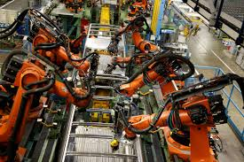
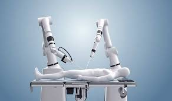
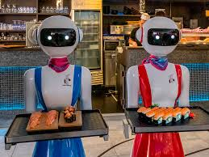
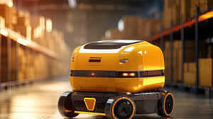

La robótica es una disciplina de la ingeniería y la ciencia que se encarga del diseño, construcción, operación y aplicación de robots. Estos dispositivos están diseñados para realizar tareas específicas de manera automática o semiautomática, replicando o ampliando la capacidad humana. La robótica combina conocimientos de electrónica, mecánica, informática e inteligencia artificial para crear sistemas autónomos o semiautónomos.
Desde los antiguos autómatas hasta los robots industriales modernos, la robótica ha avanzado significativamente. En la década de 1950, la primera generación de robots industriales fue introducida para automatizar procesos en fábricas. Hoy en día, los robots están presentes en sectores como la medicina, la exploración espacial y el entretenimiento.
Según algunas fuentes, los primeros robots se remontan, por lo menos, al siglo III a.C.; sin embargo, las primeras máquinas automatizadas tienen más que ver con la mecánica que con la robótica.
Se considera que el primer robot humanoide del mundo se llamó Elektro y fue construido por la Westinghouse. Era una máquina de dos metros que podía caminar y contaba con una grabación de 700 palabras para que el artefacto simulara que establecía una conversación. Se exhibió en la Exposición Universal entre 1939 y 1940.
Robots industriales: Utilizados en cadenas de montaje, soldadura y pintura, entre otras tareas.
Robots médicos: Realizan cirugías precisas o asisten en rehabilitación.
Robots de servicio: Aspiradoras robóticas, drones, y otros asistentes personales.
Robots autónomos: Vehículos autónomos, robots de exploración espacial.
|  |  |
|  |  |